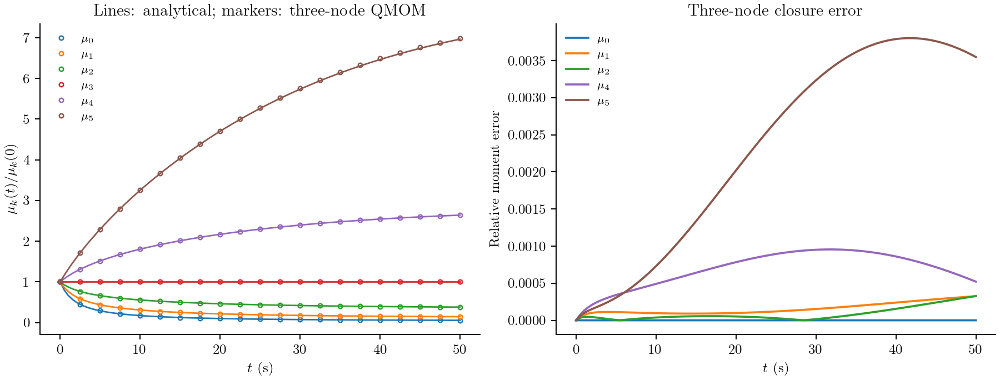
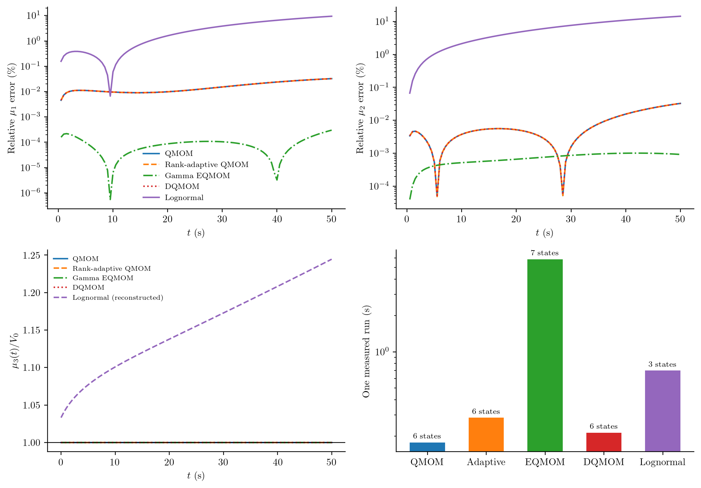
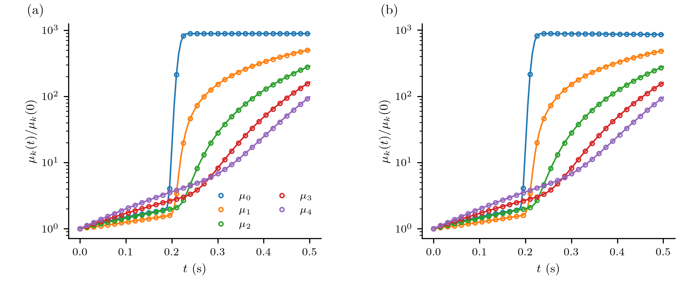
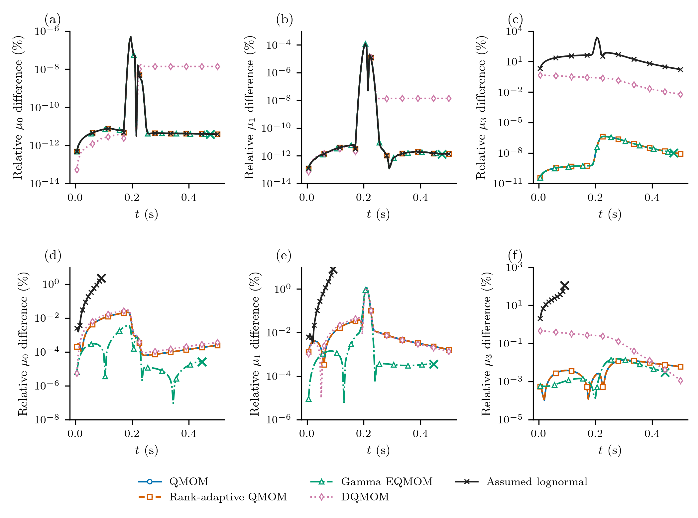
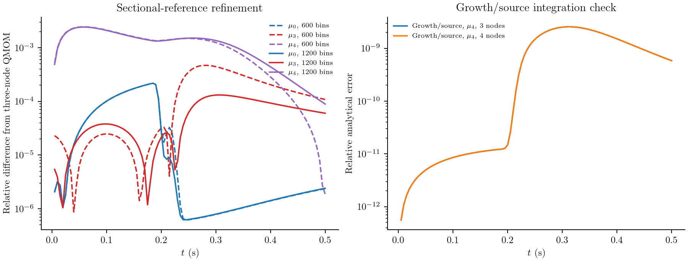

Aggregation, fragmentation and a nucleation pulse
When particles merge, their number falls and their average size increases. Fragmentation reverses that trend. Neither mechanism changes the total solid volume in a closed batch. A model that follows only a few moments should retain that balance while predicting how the number and size measures change.
A second question is harder: can those same moment equations follow a short, intense burst of nuclei while existing particles grow and collide? These two calculations answer different parts of that question. They use problems 4 and 5 of Qamar et al., A Gaussian quadrature method for solving batch crystallization models, published online in 2010 and in AIChE Journal in 2011. The first has an analytical solution; the second has an analytical growth/source limit and a numerical reference when collisions are included. The two references separate source integration from collision closure.
Particle length and conserved volume
Let $n(x,t)$ be number density per suspension volume per particle length. Length $x$ is in metres and time in seconds. Define
\[\mu_k(t)=\int_0^\infty x^k n(x,t)\,dx.\]
Thus $\mu_0$ measures number concentration and $\mu_3$ is proportional to solid volume concentration. Two particles of lengths $x$ and $y$ form one particle of length $(x^3+y^3)^{1/3}$. Adding lengths instead would violate the physical balance.
For a constant aggregation kernel $\beta_0$, the aggregation contribution is
\[\frac{\partial n(x,t)}{\partial t} =\frac{x^2}{2}\int_0^x \frac{\beta_0\,n((x^3-y^3)^{1/3},t)n(y,t)}{(x^3-y^3)^{2/3}}\,dy -\beta_0 n(x,t)\int_0^\infty n(y,t)\,dy.\]
Fragmentation contributes separately:
\[\frac{\partial n(x,t)}{\partial t} =\int_x^\infty a(y)b(x\mid y)n(y,t)\,dy-a(x)n(x,t).\]
The daughter count density is
\[b(x\mid y)=\frac{6x^2}{y^3},\qquad 0<x<y.\]
It describes binary fragmentation uniform in daughter volume, not two identical fragments. Its integral is two expected daughters, while its third moment equals the parent's volume:
\[\int_0^y b(x\mid y)\,dx=2,\qquad \int_0^y x^k b(x\mid y)\,dx=\frac{6}{k+3}y^k.\]
UniformVolumeDaughters() supplies this law. Moment rules use the last integral analytically; sectional rules use positive daughter quadrature followed by fixed-pivot deposition. daughter_moment is the corresponding extension hook.
First calculation: competing aggregation and fragmentation
Problem 4 uses $\beta_0=1$ m³/s, $a(x)=a_0x^3$ with $a_0=1$ m⁻³s⁻¹, $N_0=1$ m⁻³ and $V_0=0.001$. In the paper's length-cubed volume convention the initial distribution is
\[n(x,0)=\frac{3N_0^2}{V_0}x^2 \exp\left(-\frac{N_0x^3}{V_0}\right), \qquad \mu_k(0)=N_0\left(\frac{V_0}{N_0}\right)^{k/3} \Gamma\left(1+\frac{k}{3}\right).\]
$V_0=\mu_3(0)$ is the length-cubed concentration scale in this formula; it is not a particle length or a size-grid width. The paper prints units of m³ beside $V_0$ while also assigning $N_0$ units m⁻³. Here the equations and their resulting moments fix its convention; no additional shape factor or unit conversion is inserted into these stated benchmark values.
The complete moment equations are
\[\frac{d\mu_k}{dt} =\frac{\beta_0}{2}\int_0^\infty\int_0^\infty \left[(x^3+y^3)^{k/3}-x^k-y^k\right]n(x,t)n(y,t)\,dx\,dy +a_0\left(\frac{6}{k+3}-1\right)\mu_{k+3}.\]
In particular,
\[\frac{d\mu_0}{dt}=-\frac{\beta_0}{2}\mu_0^2+a_0\mu_3, \qquad \frac{d\mu_3}{dt}=0.\]
The higher equations need closure. A three-node QMOM uses moments 0 through 5 to recover a quadrature and evaluate those integrals. It does not approximate the daughter law by an equal-volume split:
using PopulationBalanceModels
include(joinpath(pkgdir(PopulationBalanceModels),"examples","qamar_moment_benchmarks.jl"))
import .QamarMomentBenchmarks
const benchmark = QamarMomentBenchmarks
volume = AdditiveCoordinate(x->x^3,cbrt)
model = PBMModel(
aggregation=Aggregation(ConstantKernel(1.);coordinate_map=volume),
breakage=Breakage((x,p,t,ctx)->x^3,UniformVolumeDaughters();
coordinate_map=volume),
)
basis = MomentSet(0:5;coordinate=:length)
operator = compile(model,basis;method=QMOM(3))
problem = PBMProblem(operator,benchmark.exact4(0.),(0.,50.))
solution = simulate(problem;dt=0.01,saveat=[0.,10.,50.])
vec(last(solution.u))6-element Vector{Float64}:
0.05440915521239247
0.012826175990134091
0.003421877589132205
0.001
0.00031437582414170257
0.00010515676916253723The analytical solution retains the initial exponential-in-volume form. With $N(t)=N_0\phi(t)$, all moments are
\[\mu_k(t)=N(t)\left[\frac{V_0}{N(t)}\right]^{k/3} \Gamma\left(1+\frac{k}{3}\right).\]
exact4 evaluates the hyperbolic-tangent expression for $\phi$ in the paper's Eq. 42. The printed expression contains a $C_0$ not defined in problem 4; setting it to the stated aggregation coefficient $\beta_0=1$ is independently checked by the number equation above and by $\mu_3=V_0$.

Three nodes give a maximum relative moment error of about 0.38% over this run. Four nodes reduce it to about 0.027%. Halving the integration step changes the results by much less than either error: these differences mainly assess quadrature closure, rather than time integration. The material moment remains constant. The results correspond to the moment comparison in Figure 9; QMOM nodes are not plotted as a reconstructed PSD.
Compare the moment representations
The same laws can be compiled with different moment families. The builders choose that family's required state layout and initialize it from the same distribution:
qmom = benchmark.problem4(method=QMOM(3))
adaptive = benchmark.problem4(method=RankAdaptiveQMOM(3))
extended = benchmark.problem4(method=EQMOM(3))
direct = benchmark.problem4(method=DQMOM(3))
lognormal = benchmark.problem4(method=LogNormalClosure(quadrature_order=64))| Method | Evolved state | Reconstruction used for rates |
|---|---|---|
| QMOM, three nodes | Six raw moments, orders 0–5 | Three positive atoms |
| Rank-adaptive QMOM, at most three nodes | The same six moments | Smallest rank reconstructing all six moments |
| Gamma EQMOM, three kernels | Seven raw moments, orders 0–6 | Three Gamma kernels, with 12 secondary quadrature points per kernel |
| DQMOM, three nodes | Three weights and three weighted abscissas | Directly evolved positive weights and distinct nodes |
| Assumed lognormal | Three raw moments, orders 0–2 | One lognormal shape, with 64 integration points |
This is a comparison at stated representation sizes, not equal information or equal computational work. EQMOM uses an extra moment; lognormal uses fewer. Increasing the lognormal integration order does not add shape parameters. Its integration-point count is not a reconstruction rank; the CSV rank fields are left undefined for this closure. For EQMOM those fields count primary kernels, and for DQMOM they count distinct active atoms; neither is a count of secondary integration points. ExactClosure is not an alternative finite length-moment closure here: the breakage equations require higher moments and the aggregation law contains fractional powers of volume. The analytical solution remains the independent reference for the first calculation.
DQMOM's six numbers are not six raw moments. Its initialization first obtains quadrature from the initial moments, then packs weights and weighted sizes:
basis = MomentSet(0:5;coordinate=:length)
initial = benchmark.exact4(0.)
q = quadrature(basis,initial,QMOM(3))
state = quadrature_state(DQMOM(3),q.nodes,q.weights)The runner reads its predictions through moment_value, rather than treating state[4] as material. The lognormal third moment is explicitly reconstructed from the first three moments:
\[\mu_{3,\mathrm{LN}}=\frac{\mu_0\mu_2^3}{\mu_1^3}.\]
It is not an evolved conserved state. Even initially it differs from the known third moment of this distribution. No missing material is assigned to a bulk phase to conceal that difference.

On this smooth aggregation/fragmentation calculation, fixed and rank-adaptive QMOM agree: the active rank stays three, so adaptation adds no accuracy here. Their maximum relative errors in the first and second moments are about 3.25e-4 and 3.27e-4. Gamma EQMOM reduces these to about 3.0e-6 and 1.0e-5, while using seven evolved moments and substantially more quadrature and inversion work. That result does not establish that it is better for every population shape.
DQMOM approaches the same three-node weak equations as QMOM. Their small finite step differences come from evolving different state coordinates and solving the direct source system. The third moment is conserved algebraically in the raw formulations; DQMOM's derived third moment has a small integration drift. The lognormal reconstruction instead develops roughly 20% third-moment change relative to its own reconstructed initial value, although the physical problem conserves material. Its number and lower-moment errors also grow. Tracking fewer moments is useful only if the shape assumption suits the evolving population. Solve cost also depends on the quadrature: pairwise aggregation is evaluated over all positive quadrature-point pairs, so 64 lognormal integration points can cost more than three QMOM atoms despite the smaller state vector.
All these curves use SSPRK33 with the same maximum timestep, 0.02 s, and a separate 0.01 s run. The lower-moment timestep differences in this calculation are about 6e-8, much smaller than the visible closure errors. Runtime bars are one measured solve after a short compilation warmup, including state checks; they are not timing medians or a general performance ranking.
Second calculation: a short burst of nuclei
Problem 5 adds constant growth $G=1$ m/s and a prescribed boundary density:
\[n(0,t)=100+10^6\exp[-10^4(t-0.215)^2].\]
Nucleation expects an inward number flux, so its rate is $J(t)=G n(0,t)$. The large coefficient is a density amplitude, not a particle count. The exponent sets a physical pulse duration independent of mesh spacing. The initial condition on the stated window is
\[n(x,0)=\begin{cases} 100,&0.4\le x\le0.6,\\ 0.01,&0\le x\le2\text{ outside that interval},\\ 0,&x>2. \end{cases}\]
The background must have a finite support to define full moments. We retain that support at initialization and include particles that subsequently grow past $x=2$; a reference distribution therefore needs a larger size domain. Extending the constant background to infinity would give divergent moments.
With collisions included, the PDE is
\[\frac{\partial n(x,t)}{\partial t} +\frac{\partial[G n(x,t)]}{\partial x} =\frac{x^2}{2}\int_0^x \frac{\beta_0 n((x^3-y^3)^{1/3},t)n(y,t)}{(x^3-y^3)^{2/3}}\,dy -\beta_0n(x,t)\int_0^\infty n(y,t)\,dy +\int_x^\infty y^6\frac{6x^2}{y^3}n(y,t)\,dy-x^6n(x,t),\]
where $\beta_0=1.5\times10^{-5}$ m³/s and the breakage hazard is $a(x)=x^6$ in the paper's benchmark units. The coefficient of that hazard is one in m⁻⁶s⁻¹. There is no solute or temperature balance in either of these tests.
boundary_density(t) = 100 + 1e6*exp(-1e4*(t-0.215)^2)
model = PBMModel(
growth=Growth(PolynomialRate((1.,))),
primary=Nucleation((p,t,ctx)->p.G*boundary_density(t),0.),
aggregation=Aggregation(ConstantKernel(1.5e-5);coordinate_map=volume),
breakage=Breakage((x,p,t,ctx)->x^6,UniformVolumeDaughters();
coordinate_map=volume),
)
operator = compile(model,MomentSet(0:5;coordinate=:length);method=QMOM(3),
methods=TermMethods(by_term=(growth=ExactMomentRule(),primary=ExactMomentRule())))The reconstruction closes collision integrals. Growth and boundary creation use exact moment rules: $d\mu_0/dt$ receives $J(t)$ and growth adds $kG\mu_{k-1}$ to each higher equation. The source at zero adds no higher moment directly. That separation makes the treatment of each term visible.
Without collisions, characteristics give $n(x,t)=n(x-t,0)$ for $x\ge t$ and $n(x,t)=n(0,t-x)$ for $0\le x<t$. exact5 integrates that solution, subdividing around the short pulse. It is an independent analytical check on both the moment ODEs and the temporal resolution.

Lines in the left panel are analytical; lines in the right are a new sectional reference, rather than digitized author FVS curves. Markers show three-node QMOM. These are the two comparisons made in Figure 10. The narrow population appears abruptly in number, then contributes to higher moments as it grows. Aggregation and fragmentation alter the full-process histories.
What happens when the narrow population arrives?

The upper row compares growth and nucleation with the analytical moments. All raw-moment methods have the same closed equations for this limit. The lognormal first three moments also follow those equations once its reconstruction quadrature is sufficiently resolved. Its inferred third moment can still be wrong: agreement of evolved lower moments does not validate a reconstructed material moment or size distribution.
The 16-point default lognormal quadrature becomes unresolved during this pulse. Increasing it to 32 or 64 points lets the growth/source calculation finish. The comparison uses 64 points. A reconstruction check tests the tracked moments; it does not certify higher moments in a kinetic rate. With a size-sixth-power breakage hazard, the three lower equations need inferred M6, M7 and M8:
\[\left.\frac{dM_k}{dt}\right|_{\rm breakage} =\left(\frac{6}{k+3}-1\right)M_{k+6},\qquad k=0,1,2.\]
Independent analytic lognormal moments reproduce the 64/128-point rates. An adaptive calculation also finds rapidly increasing log-variance near 0.090468223635 s. The corresponding analytic closure equations approach a finite-time runaway while number and mean stay finite. The native calculation's first overflow is later, at 0.0908 s for dt=2e-4; its last saved point is 0.09 s. These are three different quantities. Halving that step cannot turn this broad-tail closure trajectory into a resolved physical collision solution. Reconstructed M3 remains an inferred quantity, not conserved material. This runaway precedes the Gaussian source maximum at 0.215 s; the constant background births are already enough to broaden the inferred shape.
For Gamma EQMOM, independent characteristic moments through M6 clarify the no-collision limit. A three-kernel representation exists at 0.4788 s but has a primary Hankel condition number around 1.65e11 and an extremely small tail weight. The package now retries failed primary inversions in 256-bit arithmetic, without changing the family or moments. At 0.48–0.50 s an independent search of the full allowed width interval finds no nonnegative three-kernel Gamma representation of those reference moments. This family restriction is distinct from physical moment realizability; the characteristic solution is nonnegative.
With collisions, the first coarse SSPRK33 failure is a nonrealizable predictor at 0.4459 s, after the saved 0.445 s output. Smaller steps change the outcome non-monotonically, and independently controlled integration stalls earlier near ill-conditioned tail reconstruction. Tightening primary tolerance and increasing secondary quadrature do not establish a converged trajectory. The collision EQMOM evolution remains unresolved; its failed inversion alone is not evidence of intrinsic family nonrepresentability. The audit register gives the offending states, high-precision feasibility calculation and compact reproduction commands.
Crosses mark the last completed output interval. The audit tables also record the first failed internal stage. Each timing measures one solve after warmup; state counts and completed horizons are reported with it. Compare those quantities together when interpreting solve costs.
DQMOM completes both pulse calculations, but its lower-moment timestep difference is about 1.5e-3, compared with about 1e-6 for the raw three-node formulations. The exported scaled source-matrix condition number helps assess this alongside its time refinement. Matching continuous weak equations does not make two finite-step state evolutions equally accurate. A completed run and positive weights are insufficient accuracy checks.
The lower row uses the refined sectional solution as a numerical comparison, not an exact collision solution. Its truncation, splitting and spatial errors remain part of those differences. The reconstructed lognormal third moment is labelled separately from tracked third moments throughout the export.
The native positive-measure policy provides an admissible first-order option for supported raw QMOM/rank-adaptive populations. It is not automatically applied to these SSPRK33 runs and does not supply extinction, empty-state or rank-collision guarantees to EQMOM, lognormal or DQMOM. Changing integration policy is a separate experiment from changing the moment representation.
Separate closure and reference errors

The runner compares three and four nodes, and halves the native integration step. A separate resolved reference uses 600 and 1200 uniform length bins on $[0,3]$. It applies Strang splitting: fixed-pivot collision half-steps bracket an exact $C=1$ growth shift. Boundary births are integrated over each shift using the Gaussian error function. The collision substeps use SSPRK33 with a conservative outgoing-rate step estimate and checks on every Runge–Kutta stage. This is a stated reference algorithm, not a claim to implement the paper's FVS solver.
Grid refinement also changes the split step, since its growth update requires $\Delta t=\Delta x/G$. Their differences include spatial and splitting error. They must not be called QMOM error alone. The initial domain and the extended reference domain are stated separately; unresolved fixed-pivot products are discarded explicitly. Further domain and time refinement are needed before interpreting very small differences as validated closure accuracy. Full raw moments do not determine a unique continuous PSD.
Results are in aggregation_breakage.csv, pulse.csv, sectional_reference.csv and refinement.csv. The family comparison exports histories, state counts, timing, conditioning and completion, and reconstruction-quadrature checks. Final unresolved collision rates and the resolved-plus-unresolved volume balance are recorded in reference_checks.csv. These endpoint rates are not cumulative escaped-volume reservoirs.
julia --project=. examples/qamar_moment_benchmarks.jl
python docs/benchmarks/plot_case_studies.py moments --usetex
python docs/benchmarks/plot_moment_comparison.py --usetex
julia --project=docs docs/make.jlTo regenerate only the method comparison while reusing the supplied sectional reference, run julia --project=. examples/qamar_moment_benchmarks.jl --methods-only. This retains separate timestep and reconstruction-quadrature checks.
Complete runnable script
The code below is read from the example source during the documentation build.
module QamarMomentBenchmarks
using PopulationBalanceModels
using LinearAlgebra
using SpecialFunctions: gamma, erf
export problem4,problem5,exact4,exact5,run_benchmarks,run_method_comparison,comparison_moment,method_basis
const volume_map=AdditiveCoordinate(x->x^3,cbrt)
const daughter_law=UniformVolumeDaughters()
const gl=PopulationBalanceModels._gauss_legendre(GaussLegendre(24))
function method_basis(method,nodes=3)
lastorder=method isa EQMOM ? 2method.nodes : method isa LogNormalClosure ? 2 :
method isa RankAdaptiveQMOM ? 2method.max_nodes-1 :
method isa Union{QuadratureClosure,DQMOM} ? 2method.nodes-1 : 2nodes-1
MomentSet(0:lastorder;coordinate=:length)
end
function initial_state(method,basis,raw)
if method isa DQMOM
q=quadrature(basis,raw,QMOM(method.nodes))
return quadrature_state(method,q.nodes,q.weights)
end
raw
end
"""Problem 4: constant aggregation, volume-proportional breakage and exponential volume distribution."""
function problem4(;nodes=3,method=QMOM(nodes),tf=50.)
basis=method_basis(method,nodes)
model=PBMModel(
aggregation=Aggregation(ConstantKernel(1.);coordinate_map=volume_map),
breakage=Breakage((x,p,t,ctx)->x^3,daughter_law;coordinate_map=volume_map))
mu=exact4(0.,basis.orders)
PBMProblem(compile(model,basis;method),initial_state(method,basis,mu),(0.,tf))
end
# Number obeys dμ0/dt = a0 μ3 - β0 μ0²/2; μ3=V0 is constant.
# This also disambiguates the C0 symbol in the printed Eq.42: here β0=C0=1.
function exact4(t,orders=0:5)
N0=1.;V0=.001;beta=1.;a0=1.
steady=sqrt(2a0*V0/beta)/N0
phi=steady*(1+steady*tanh(steady*beta*N0*t/2))/(steady+tanh(steady*beta*N0*t/2))
[N0*phi*(V0/(N0*phi))^(k/3)*gamma(1+k/3) for k in orders]
end
# Eq.43 is a boundary DENSITY. Convert it to number flux using G=1 m/s.
boundary_density(t)=100+1e6*exp(-1e4*(t-.215)^2)
nucleation(p,t,ctx)=p.G*boundary_density(t)
initial5(x)=0<=x<=2 ? (.4<=x<=.6 ? 100. : .01) : 0.
initial_moment5(k)=.01*2.0^(k+1)/(k+1)+99.99*(.6^(k+1)-.4^(k+1))/(k+1)
"""Problem 5 with or without aggregation/breakage. The paper's background is
restricted to its stated initial window [0,2]; it is zero outside. Moments are
full-population integrals, so a sectional reference must extend beyond x=2.
"""
function problem5(;nodes=3,collisions=true,tf=.5,method=QMOM(nodes))
terms=(growth=Growth(PolynomialRate((1.,))),primary=Nucleation(nucleation,0.))
if collisions
terms=merge(terms,(
aggregation=Aggregation(ConstantKernel(1.5e-5);coordinate_map=volume_map),
breakage=Breakage((x,p,t,ctx)->x^6,daughter_law;coordinate_map=volume_map)))
end
basis=method_basis(method,nodes)
op=compile(PBMModel(;terms...),basis;method,
methods=TermMethods(by_term=(growth=ExactMomentRule(),primary=ExactMomentRule())))
raw=[initial_moment5(k) for k in basis.orders]
PBMProblem(op,initial_state(method,basis,raw),(0.,tf);p=(G=1.,))
end
# Analytical full moments of advected initial particles and boundary births.
# Subdivide the time integral across the narrow pulse before applying Gauss rules.
function exact5(t,orders=0:5)
out=Float64[]
for k in orders
value=sum(binomial(k,j)*t^(k-j)*initial_moment5(j) for j in 0:k)
points=sort!(unique(vcat(0.,t,filter(s->0<s<t,.215 .+ .01 .* collect(-12:12)))))
for (a,b) in zip(points[1:end-1],points[2:end])
value+=PopulationBalanceModels._integrate_bin(s->(t-s)^k*boundary_density(s),a,b,gl)
end
push!(out,value)
end
out
end
"""Independent finite-volume reference in LENGTH, conserving volume for collisions.
The full residual has MUSCL growth and fixed-pivot collisions; the standalone
reference driver uses the stated Strang split. Unresolved event rates are exported.
"""
function sectional5(;bins=200,Lmax=3.,collisions=true,tf=.5)
# Uniform length bins resolve the nucleation front; refine their width.
edges=collect(range(0.,Lmax;length=bins+1))
grid=Grid1D(edges;coordinate=:length)
model=PBMModel(
growth=Growth(PolynomialRate((1.,))),primary=Nucleation(nucleation,0.))
if collisions
model=PBMModel(growth=only(filter(t->t isa Growth,model.terms)),primary=Nucleation(nucleation,0.),
aggregation=Aggregation(ConstantKernel(1.5e-5);coordinate_map=volume_map,overflow=:discard),
breakage=Breakage((x,p,t,ctx)->x^6,daughter_law;coordinate_map=volume_map,overflow=:discard))
end
op=compile(model,grid;methods=TermMethods(growth=MUSCL(),by_term=(primary=BoundaryInjection(:left),)),
bc=SizeBC(NoFlux(),OpenBoundary()))
N=[.01*max(min(b,2.)-a,0.)+99.99*max(min(b,.6)-max(a,.4),0.) for (a,b) in zip(edges[1:end-1],edges[2:end])]
PBMProblem(op,N,(0.,tf);p=(G=1.,))
end
"""Run paper Problems 4 and 5. No claims of exact PSD reconstruction from moments.
Reference5 is optional because a resolved collision calculation is more costly.
"""
function run_benchmarks(;output=joinpath(@__DIR__,"..","docs","src","assets","qamar_moments"),
dt4=.01,dt5=.0002,reference_bins=(600,1200),reference_solver=nothing,
compare_methods=true,comparison_dt4=.02)
mkpath(output)
open(joinpath(output,"aggregation_breakage.csv"),"w") do io
println(io,"nodes,time,order,moment,exact,relative_error")
for nodes in (2,3,4)
pb=problem4(;nodes);sol=simulate(pb;dt=dt4,saveat=0.:.5:50.)
for (t,u) in zip(sol.t,sol.u),k in 0:min(5,2nodes-1)
truth=exact4(t,0:2nodes-1)[k+1]
println(io,join((nodes,t,k,u[k+1],truth,abs(u[k+1]/truth-1)),','))
end
end
end
times=collect(0.:.005:.5)
open(joinpath(output,"pulse.csv"),"w") do io
println(io,"processes,nodes,time,order,moment,reference,relative_difference")
for collisions in (false,true),nodes in (3,4)
pb=problem5(;nodes,collisions)
solution=simulate(pb;dt=dt5,saveat=times)
for (t,u) in zip(solution.t,solution.u),k in 0:4
truth=collisions ? NaN : exact5(t,0:4)[k+1]
println(io,join((collisions ? "all" : "growth_nucleation",nodes,t,k,u[k+1],truth,isfinite(truth) ? abs(u[k+1]/truth-1) : NaN),','))
end
end
end
open(joinpath(output,"refinement.csv"),"w") do io
println(io,"problem,nodes,order,max_relative_time_difference,final_relative_time_difference")
for (label,builder,dt) in ((4,problem4,dt4),(5,problem5,dt5))
for nodes in (3,4)
pb=builder(;nodes);ts=label==4 ? collect(0.:.5:50.) : times
coarse=simulate(pb;dt,saveat=ts);fine=simulate(pb;dt=dt/2,saveat=ts)
for k in 0:min(5,2nodes-1)
difference=maximum(abs(a[k+1]/b[k+1]-1) for (a,b) in zip(coarse.u,fine.u))
println(io,join((label,nodes,k,difference,abs(last(coarse.u)[k+1]/last(fine.u)[k+1]-1)),','))
end
end
end
end
# The default standalone reference driver is defined below; an optional
# checked implicit solver can be supplied for expensive resolved runs.
checks=NamedTuple[]
open(joinpath(output,"sectional_reference.csv"),"w") do io
println(io,"bins,time,order,moment")
for n in reference_bins
pb=sectional5(bins=n)
solution=reference_solver===nothing ? sectional_solve(pb,times) : reference_solver(pb,times)
for (t,u) in zip(solution.t,solution.u),k in 0:4
println(io,join((n,t,k,only(moment(pb.operator.grid,u,k))),','))
end
collision_model=PBMModel(Tuple(term for term in pb.operator.model.terms if term isa Union{Aggregation,Breakage}))
cop=compile(collision_model,pb.operator.grid)
final=last(solution.u);du=similar(final);rhs!(du,final,cop,pb.p,.5)
rates=diagnostics(cop,final,pb.p,.5)
lost=only(rates.unresolved_birth_size_rate)
push!(checks,(bins=n,upper_length=last(pb.operator.grid.edges),
unresolved_number_rate=only(rates.unresolved_birth_number_rate),unresolved_volume_rate=lost,
collision_volume_balance=only(moment(cop.grid,du,3))+lost))
end
end
open(joinpath(output,"reference_checks.csv"),"w") do io
!isempty(checks) && println(io,join(keys(first(checks)),','))
for row in checks;println(io,join(values(row),','));end
end
write(joinpath(output,"inputs.txt"),"Qamar et al., DOI 10.1002/aic.12264, Problems 4 and 5; online 2010, journal 2011.\n"*
"Problem 4: β0=a0=N0=1, V0=.001; Eq.42 C0 interpreted as the stated β0, independently checked by the number balance.\n"*
"Problem 5: x0=0, G=1, density boundary 100+10^6exp[-10^4(t-.215)^2], β=1.5e-5, a(x)=x^6.\n"*
"Initial background .01 restricted to [0,2], square peak 100 on [.4,.6]. Full moments include particles advected beyond x=2.\n"*
"Daughters: b(x|y)=6x²/y³, analytically integrated in moment weak forms.\n"*
"QMOM 2/3/4 nodes; Julia $(VERSION); dt4=$dt4; dt5=$dt5.\n"*
"Sectional comparison uses Strang splitting: exact C=1 growth/source cell integrals and SSPRK33 fixed-pivot collisions, not author FVS data.\n"*
"Reference bins=$(reference_bins), Lmax=3; time/domain and lower-pivot losses must be assessed.\n")
compare_methods && run_method_comparison(;output,dt4=comparison_dt4,dt5)
end
function sectional_solve(pb,times)
# Strang splitting supplies an independent, resolved distribution reference.
# Growth + the known boundary source is advanced exactly in cell integrals
# at C=1, so the pulse is not smeared by boundary upwinding.
grid=pb.operator.grid;h=first(grid.widths);p=pb.p
growthop=compile(PBMModel(Growth(AffineGrowth(1.,0.))),grid;
evolution=Inguva2022(),bc=SizeBC(OpenBoundary(),OpenBoundary()))
terms=Tuple(term for term in pb.operator.model.terms if term isa Union{Aggregation,Breakage})
collisions=compile(PBMModel(terms),grid)
N=copy(pb.u0);states=typeof(N)[];steps=0
# Conservative SSP step estimate for this fixed benchmark; every RK stage
# is still checked for nonnegative particle numbers.
total_bound=sum(N)+50+1e6*sqrt(pi/1e4)
reaction_dt=.8/(last(grid.edges)^6+1.5e-5*total_bound)
ts=collect(times)
for target in ts
targetsteps=round(Int,target/h)
isapprox(targetsteps*h,target;atol=1e-12,rtol=1e-10) ||
throw(ArgumentError("reference output times must lie on the C=1 time grid"))
while steps<targetsteps
t=steps*h
firsthalf=PBMProblem(collisions,N,(t,t+h/2);p)
N=last(simulate(firsthalf;dt=reaction_dt,saveat=[t+h/2]).u)
growthpb=PBMProblem(growthop,N,(t,t+h);p)
N=last(simulate(growthpb;dt=h,saveat=[t+h]).u)
N[1]+=100h+1e6*sqrt(pi)/200*(erf(100*(t+h-.215))-erf(100*(t-.215)))
secondhalf=PBMProblem(collisions,N,(t+h/2,t+h);p)
N=last(simulate(secondhalf;dt=reaction_dt,saveat=[t+h]).u)
steps+=1
end
push!(states,copy(N))
end
PBMSolution(ts,states,pb,steps)
end
"""A tracked raw moment, or an explicitly labelled assumed-lognormal moment.
Only the lognormal family reconstructs untracked moments here; quadrature nodes
are never presented as a uniquely reconstructed density.
"""
function comparison_moment(op,u,k)
k in op.grid.orders && return moment_value(op.closure,op.grid,u,k)
op.closure isa LogNormalClosure || throw(ArgumentError("untracked moment $k"))
a,b,c=vec(u)
iszero(a) && return 0.0
a*exp(k*log(b/a)+k*(k-1)/2*log(c*a/b^2))
end
function comparison_run(builder,method,times,dt)
pb=builder(;method)
states=typeof(pb.u0)[copy(pb.u0)];saved=Float64[first(times)]
status="completed";failure="";max_rank=0;min_rank=typemax(Int);max_condition=NaN
started=time_ns()
for target in times[2:end]
try
localpb=remake(pb;u0=last(states),tspan=(last(saved),target))
sol=simulate(localpb;dt,saveat=[target],method=SSPRK33())
# Accepted moments must also be evaluable by the selected closure.
q=quadrature(pb.operator.grid,last(sol.u),method)
# Lognormal integration nodes are not a moment-reconstruction rank.
if !(method isa LogNormalClosure)
rank=hasproperty(q,:rank) ? q.rank : count(>(0),q.weights)
max_rank=max(max_rank,rank);min_rank=min(min_rank,rank)
end
if method isa DQMOM
scaled=q.nodes./(sum(q.weights.*q.nodes)/sum(q.weights));n=method.nodes
A=[i<=n ? (1-k)*scaled[i]^k : k==0 ? 0. : k*scaled[i-n]^(k-1) for k in 0:2n-1,i in 1:2n]
singular=svdvals(A)
condition=maximum(singular)/minimum(singular)
max_condition=isnan(max_condition) ? condition : max(max_condition,condition)
end
push!(states,copy(last(sol.u)));push!(saved,target)
catch e
e isa Union{NumericalFailure,ArgumentError} || rethrow()
status="failed";failure=sprint(showerror,e);break
end
end
(;pb,t=saved,u=states,status,failure,elapsed=(time_ns()-started)/1e9,
min_rank=method isa LogNormalClosure ? NaN : min_rank==typemax(Int) ? 0 : min_rank,
max_rank=method isa LogNormalClosure ? NaN : max_rank,max_condition)
end
"""
Compare the actual moment families on the same physical laws. Uses SSPRK33 and
checks time refinement separately. Each method has its required state layout;
lognormal higher moments are labelled reconstructions, not conserved states.
Failed runs retain only completed output intervals and their error message.
The committed sectional comparison is reused for plotting Problem 5 collisions.
"""
function run_method_comparison(;output=joinpath(@__DIR__,"..","docs","src","assets","qamar_moments"),
dt4=.02,dt5=.0002,check_reconstruction=true,methods=(QMOM=QMOM(3),RankAdaptive=RankAdaptiveQMOM(3),
GammaEQMOM=EQMOM(3),DQMOM=DQMOM(3),LogNormal=LogNormalClosure(quadrature_order=64)))
mkpath(output)
histories=NamedTuple[];summaries=NamedTuple[]
for (scenario,builder,dt,times) in (
("aggregation_breakage",problem4,dt4,collect(0.:.5:50.)),
("growth_nucleation",(;method)->problem5(;method,collisions=false),dt5,collect(0.:.005:.5)),
("growth_nucleation_collisions",problem5,dt5,collect(0.:.005:.5)))
for (name,method) in pairs(methods)
# Compilation warmup only; elapsed time below is one subsequent run.
try
comparison_run(builder,method,times[1:2],dt)
run=comparison_run(builder,method,times,dt)
fine=comparison_run(builder,method,times,dt/2)
common=min(length(run.t),length(fine.t));time_error=NaN
if common>1
time_error=maximum(abs(comparison_moment(run.pb.operator,run.u[i],k)/
comparison_moment(fine.pb.operator,fine.u[i],k)-1) for i in 2:common,k in 0:2)
end
for (t,u) in zip(run.t,run.u),k in 0:min(5,last(run.pb.operator.grid.orders))
truth=scenario=="aggregation_breakage" ? exact4(t,0:5)[k+1] :
scenario=="growth_nucleation" ? exact5(t,0:5)[k+1] : NaN
value=comparison_moment(run.pb.operator,u,k)
push!(histories,(scenario=scenario,method=String(name),time=t,order=k,
moment=value,reference=truth,relative_error=isfinite(truth) ? abs(value/truth-1) : NaN,tracked=true))
end
if method isa LogNormalClosure
for (t,u) in zip(run.t,run.u)
truth=scenario=="aggregation_breakage" ? exact4(t)[4] :
scenario=="growth_nucleation" ? exact5(t)[4] : NaN
value=comparison_moment(run.pb.operator,u,3)
push!(histories,(scenario=scenario,method=String(name),time=t,order=3,
moment=value,reference=truth,relative_error=isfinite(truth) ? abs(value/truth-1) : NaN,tracked=false))
end
end
third0=comparison_moment(run.pb.operator,first(run.u),3)
thirdf=comparison_moment(run.pb.operator,last(run.u),3)
push!(summaries,(scenario=scenario,method=String(name),states=length(run.pb.u0),
tracked_M3=3 in run.pb.operator.grid.orders,status=run.status,last_time=last(run.t),
seconds=run.elapsed,time_refinement=time_error,fine_status=fine.status,fine_last_time=last(fine.t),max_source_condition=run.max_condition,
third_moment_relative_change=thirdf/third0-1,min_rank=run.min_rank,max_rank=run.max_rank,
failure=replace(run.failure,','=>';','\n'=>' ')))
println(scenario," ",name,": ",run.status," through t=",last(run.t),"; seconds=",run.elapsed,
"; time difference=",time_error,"; ",run.failure);flush(stdout)
catch e
e isa Union{NumericalFailure,ArgumentError} || rethrow()
push!(summaries,(scenario=scenario,method=String(name),states=length(method_basis(method)),
tracked_M3=3 in method_basis(method).orders,status="initialization_failed",last_time=0.,
seconds=0.,time_refinement=NaN,fine_status="not_run",fine_last_time=0.,max_source_condition=NaN,third_moment_relative_change=NaN,
min_rank=0,max_rank=0,failure=replace(sprint(showerror,e),','=>';','\n'=>' ')))
end
end
end
for (filename,rows) in (("method_comparison.csv",histories),("method_summary.csv",summaries))
open(joinpath(output,filename),"w") do io
isempty(rows) && return
println(io,join(keys(first(rows)),','))
for row in rows;println(io,join(values(row),','));end
end
end
if check_reconstruction
checks=NamedTuple[]
for (scenario,builder) in (("growth_nucleation",(;method)->problem5(;method,collisions=false)),
("growth_nucleation_collisions",problem5))
for (name,method,order) in (("LogNormal",LogNormalClosure(quadrature_order=16),16),
("LogNormal",LogNormalClosure(quadrature_order=32),32),
("LogNormal",LogNormalClosure(quadrature_order=64),64),
("GammaEQMOM",EQMOM(3),12),("GammaEQMOM",EQMOM(3;secondary_nodes=48),48))
r=comparison_run(builder,method,collect(0.:.005:.5),dt5/2)
push!(checks,(scenario=scenario,method=name,quadrature_order=order,dt=dt5/2,status=r.status,
last_time=last(r.t),failure=replace(r.failure,','=>';','\n'=>' ')))
end
end
open(joinpath(output,"reconstruction_checks.csv"),"w") do io
println(io,join(keys(first(checks)),','))
for row in checks;println(io,join(values(row),','));end
end
end
(;histories,summaries)
end
if abspath(PROGRAM_FILE)==@__FILE__
"--methods-only" in ARGS ? run_method_comparison() : run_benchmarks()
end
end